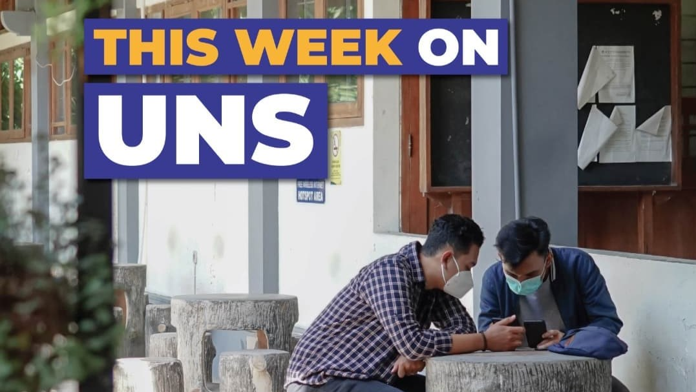

|
Wajah Baru, Website SMA 11 Maret

Sumber gambar: unsplash
Memasuki era digital menuntut segala aspek bidang memanfaatkan kemajuan teknologi. Eksistensi dari sebuah organisasi seperti sekolah dipengaruhi oleh kemampuan memanfaatkan perkembangan teknologi digital dengan
baik, salah satunya adanya website. Hadirnya website sekolah menjadi media yang tepat untuk memperkenalkan kredibilitas sekolah, informasi ter-update dan menjelaskan secara singkat tentang profil dan kondisi
sekolah baik yang ditujukan untuk warga sekolah hingga masyarakat umum. Wajah baru kini hadir di website SMA 11 Maret. Mengikuti perkembangan teknologi, kami meluncurkan website baru dengan tampilan dan konsep yang
baru. Informasi yang ditampilkan lebih lengkap dengan menyampaikan berita terkini, profil sekolah, ekstrakulikuler sekolah, prestasi terbaru dan info update lainnya. Website dilengkapi dengan informasi pembelajaran
digital atau e-learning bagi para siswa dan guru. Para guru dapat memberikan materi dan tugas secara daring melalui laman sehingga para siswa dapat mengakses materi dengan lebih efektif dan efisien. Selain itu,
masyarakat umum dapat terkoneksi langsung dengan SMA 11 Maret melalui website ini. Dimana kami menyampaikan informasi yang memudahkan mereka untuk mengetahui perkembangan dan kemajuan sekolah SMA 11 Maret.
|